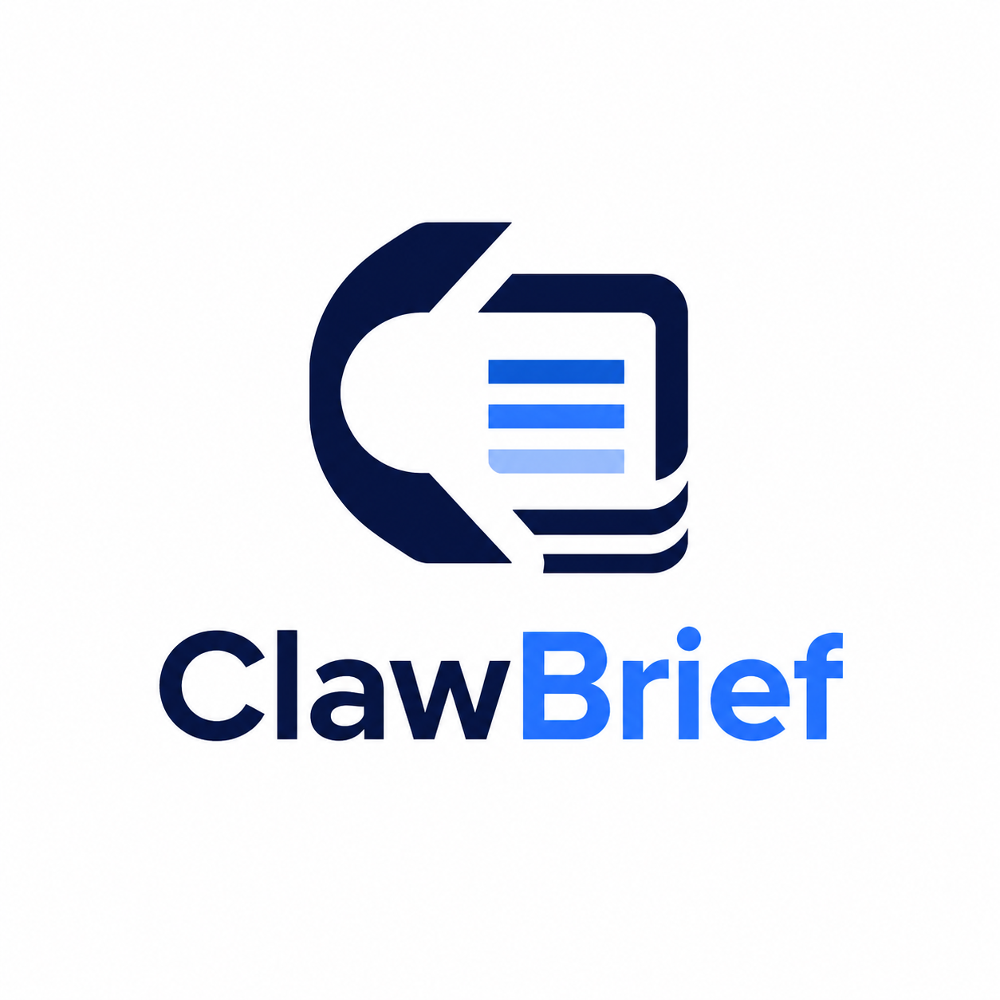
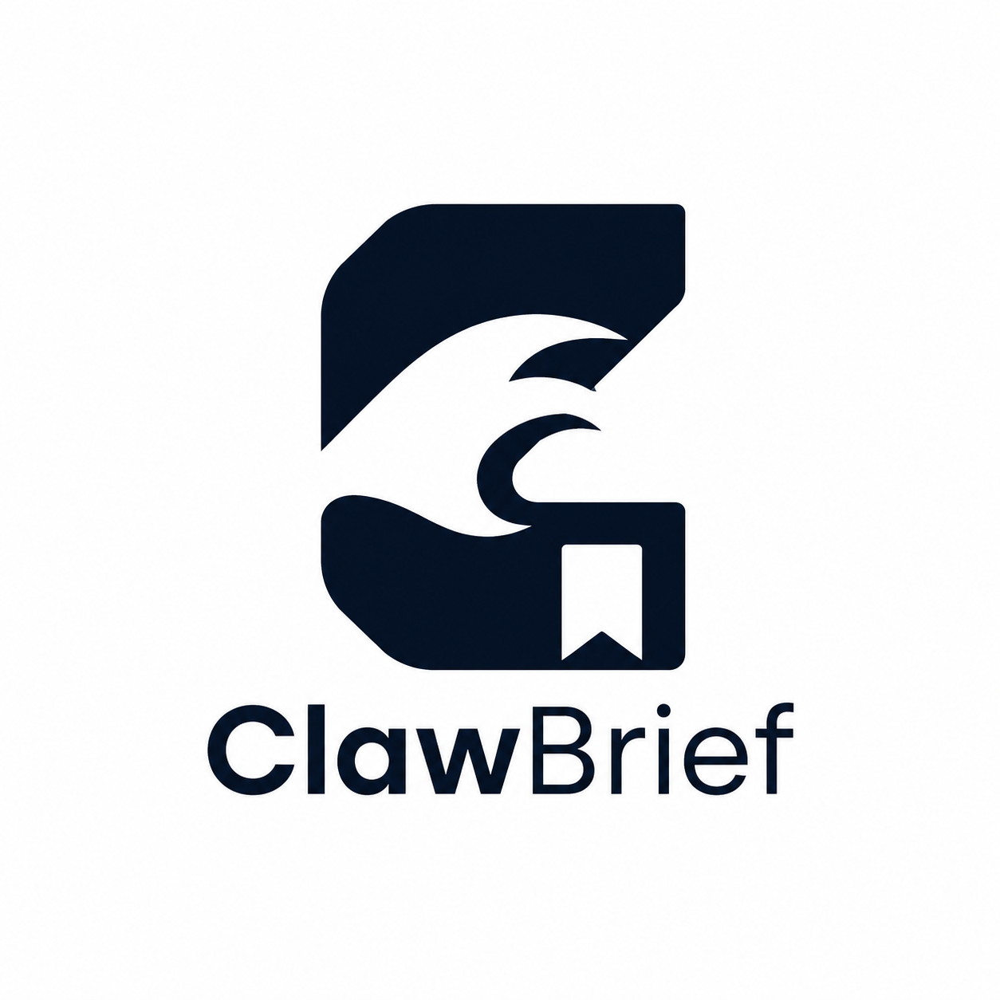
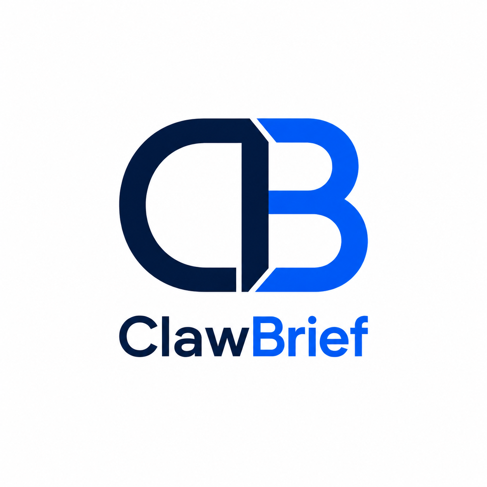
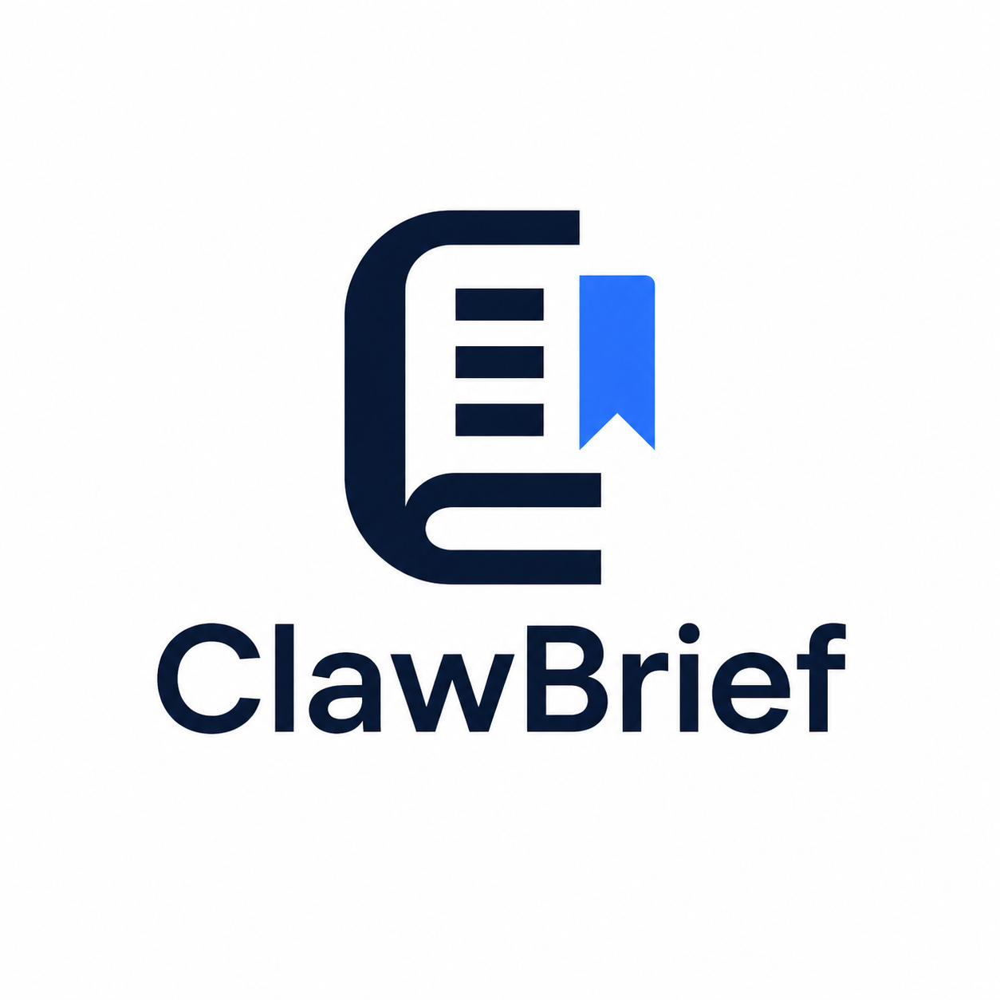
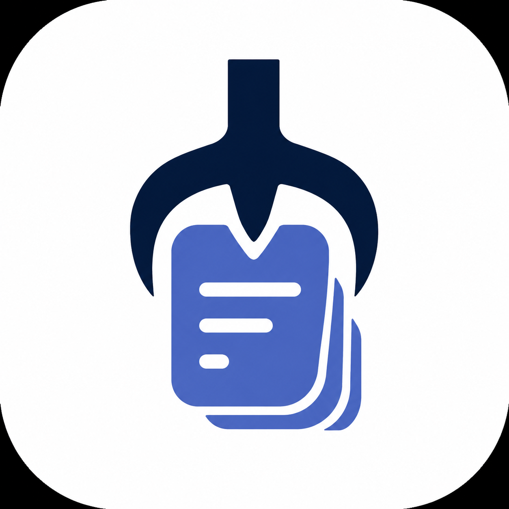
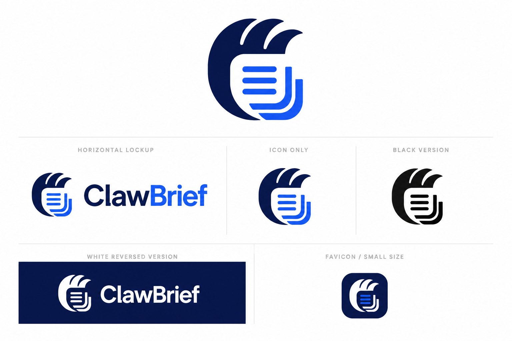

CASE C1
极简几何版
极简SaaS图形
测试品牌是否能用最少形状表达 newsletter capture / brief / knowledge。
识别4
定位4
小图4
字标4
延展4
基于用户上传的参考图方法论，为 ClawBrief 生成 6 个方向，并与「由初」的中文个人品牌测试进行横向比较。
用户上传图片本质上是一套 Logo 生成测试方法：固定品牌定位，改变视觉策略，观察不同设计路线的适配性。
品牌名和定位固定为 ClawBrief，视觉变量分成极简、负空间、CB、编辑感、App icon、系统 sheet。
这套方法非常适合英文 SaaS / 工具品牌，因为 monogram、app icon 和系统 sheet 都能快速评估产品化潜力。
ClawBrief 偏产品品牌，由初偏个人公众号品牌；前者可更公司化，后者需要更多人文和个人气质。
按照参考图中提出的六个方向生成一轮样本，用于和「由初」的测试框架形成参照。

测试品牌是否能用最少形状表达 newsletter capture / brief / knowledge。

测试是否能通过隐藏空间形成“claw / brief / bookmark”的二义性。

英文品牌更适合 monogram，CB 能快速形成公司化、产品化识别。

最贴近 newsletter、摘要、知识库的真实业务属性，适合内容型 SaaS。

用于检查小尺寸、圆角方形、移动端或浏览器插件图标的可用性。

用一张图观察主标、横版、反白、favicon 等延展关系；适合进入品牌规范阶段。
同样是 Logo 测试，英文产品品牌和中文个人品牌的判断标准不同。
ClawBrief 可以天然使用 CB monogram 和 App icon，产品化识别更直接。
由初拥有更强的语义和人文空间，适合围绕“由问题开始，回到产品初衷”建立品牌故事。
ClawBrief 可偏 SaaS 系统感；由初不宜过度工具化，应保留公众号、作者、产品思考者的温度。
参考图的方法适合继续复用，但需要针对中文个人品牌改造。
后续「由初」不要完全照搬 ClawBrief 的 CB / App icon / SaaS 路线，而应采用“语义抽象 + 编辑感 + 个人品牌”的组合：先确定主符号，再生成头像、横版、黑白反转、小尺寸 favicon 和文章封面模板。